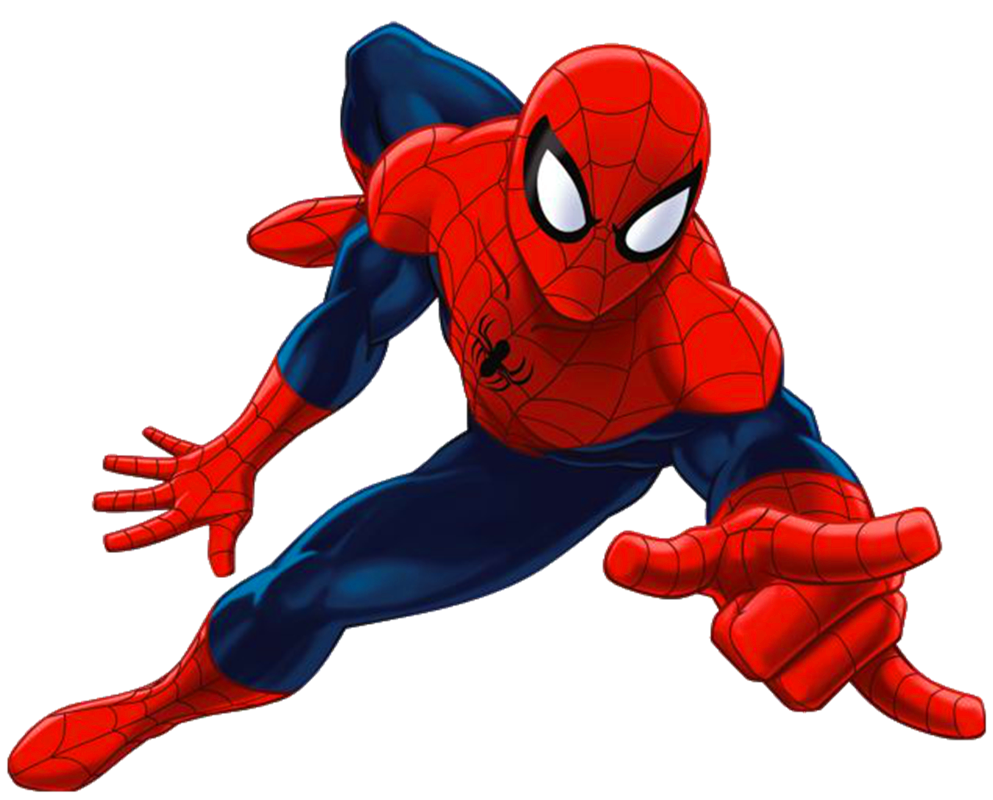

WALL-CRAWLING
When Peter Parker was bitten by a radioactive spider, it allowed his body to stick to virtually any surface by enhancing the static electricity of his body. He can climb up the side of buildings to get to higher destinations, he stick to walls to get away from trouble on the floor, or just sneak around by climbing unseen on ceilings. Even though Spidey can stick to walls with his costume on with no problem, he sticks better to surfaces without his costume's gloves and boots.

SPIDER-STRENGTH
Peter Parker says on this show that he has the "proportionate strength of a spider". So what does that mean? Well, it means he's strong enough to lift up as much as ten tons over his head, he can break free from some metal restraints, and he can punch through brick walls without breaking his hand. Of course, with other heroes like the Thing and The Mighty Thor occupying the Marvel Universe, some people tend to forget that Spider-Man even has super-strength, it's just that he's nowhere near as strong as they are.
SPIDER-STAMINA
Spider-Man is a pretty tough guy to wear out under normal circumstances. He's been known to tire some of his enemies in prolonged battles, even foes physically stronger than he is like the Rhino, and he can hold his breath much longer than an ordinary person while underwater. But that doesn't mean that Spidey himself doesn't get tired, especially with the likes of such super-powered villains as the Scorpion and Venom chasing and fighting poor Spidey all over the city.

SPIDER-SENSE
Spider-Man's spider-sense acts like an early warning system, and alerts him just before something bad is about to happen to him. It can give him enough time to avoid most super-powered attacks thrown at him, from Doc Ock's tentacles to the Hobgoblin's thrown pumpkin bombs. Spider-Man can even detect danger of something around him even if he doesn't see it, like a hidden bomb or when Mysterio is camouflaged by one of his illusions. In fact, when Spider-Man wants to track down a villain that's gotten away, his spider-sense can be tuned in to the frequency of his spider-tracer tracking gadgets. However, his spider-sense doesn't warn him of everything. Because he had bonded with an alien symbiote and rejected it, the symbiote bonded with Eddie Brock to become Venom. As a result, Venom doesn't set off Spider-Man's spider-sense, leaving him open to attacks with no prior warning.

WEB-SHOOTERS
This isn't a power, but the irradiated spider that bit Peter passed on an instinctive knowledge of how to make a sticky, web-like substance from different enzymes and chemicals. He can load cartridges filled with his web-fluid into the web-shooter devices he wears on each wrist. Spidey taps his middle and ring fingers onto the web-shooter's trigger button on his palm in order to fire out a web, so that way he doesn't cause an accidental web when he grabs onto something or makes his hand into a fist to throw a punch. He can adjust the web-shooters to shoot either a goo-like substance, a single web-rope to use to swing over the city, or other various ways. Spider-Man has been known to use his webbing to create parachutes on this cartoon show. In the comics, he can not only make parachutes with them, but baseball bats, rafts, and even armor, among other things.
SPIDER-TRACERS
Lose track of a villain while unconscious or distracted? That's not a problem for Spider-Man. Peter managed to invent small, spider-shaped tracking devices that can stick onto virtually any surface. The devices are so small and light, that most people don't even feel the tracking devices caught on their clothing or costumes (like Rocket Racer, pictured above). On the cartoon show, Peter even managed to get the spider-tracers to stick to one of Alistair Smythe's Spider-Slayer robots after testing it on his own aunt's non-stick frying pan. True story.